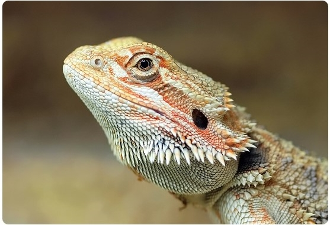

턱 주변의 비늘이 수염처럼 보여 이름 붙여진, 순하고 인기 많은 도마뱀입니다.
목 주변의 뾰족한 비늘이 특징이며, 온순하고 호기심이 많아 핸들링(만지기)을 잘 받아들입니다. 주행성(낮에 활동)이라 활동 모습을 관찰하기 쉽습니다.
잡식성입니다. 새끼 때는 귀뚜라미, 밀웜 등 곤충(80%) 위주, 성체가 되면 채소/과일(80%) 위주로 급여합니다. 칼슘 및 비타민 D3 보충제는 필수입니다.
8년 ~ 15년
보통. 사육 환경 설정(온도, UV-B 램프)이 까다롭지만, 한 번 환경이 갖춰지면 관리가 쉽고 순하여 초보자에게도 인기 있습니다.
일광욕(Basking)을 위한 고온 구역(38~42℃)과 서늘한 구역을 반드시 조성해야 합니다. 필수적으로 **UV-B 램프**를 설치하여 비타민 D3 합성을 도와야 합니다.

목 주변의 '수염' 비늘이 특징적입니다.